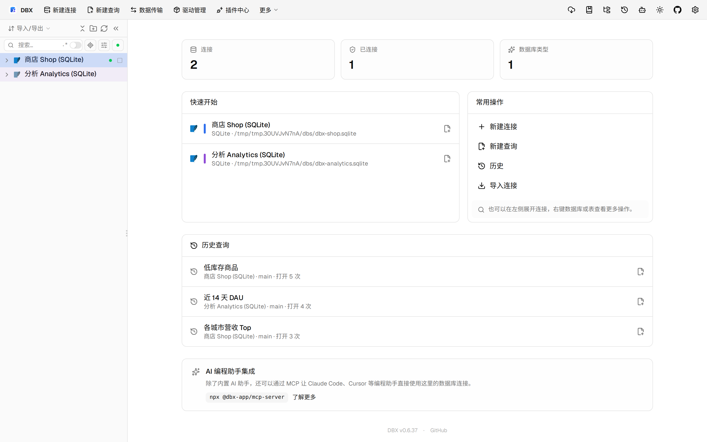
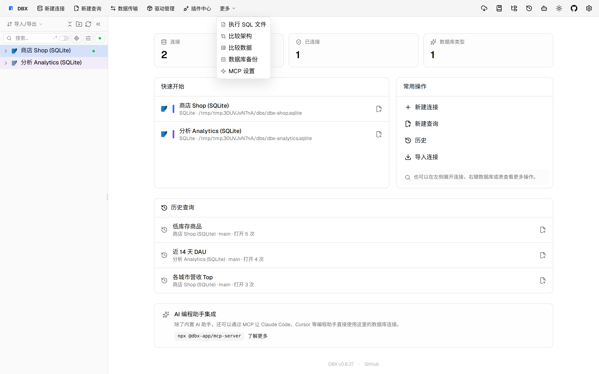
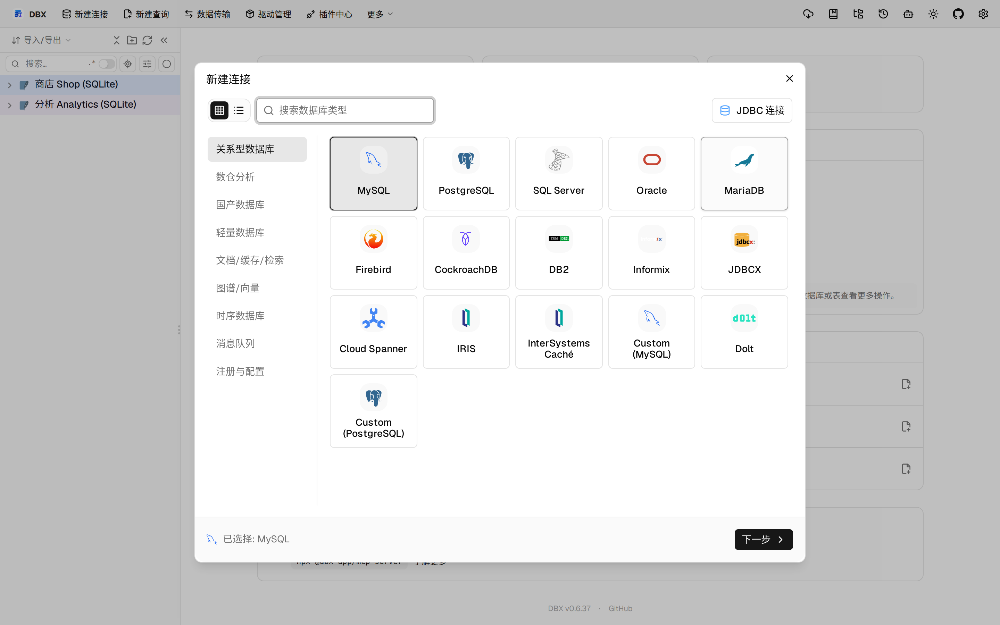
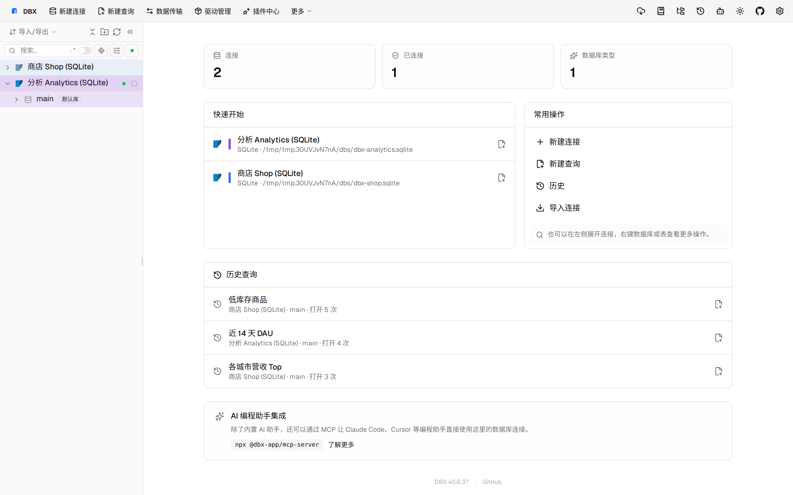

#11560 界面预览
commit 9ad8c06 · 回到 PR · 这个 PR 给 Oracle / OceanBase Oracle 增加了“无效对象”入口页：可以分页查看无效对象，点选后读取编译错误和源码，并支持先预览再显式编译单个对象。另新增 Oracle 类型源码/元数据面板，能在类型和类型体页面直接展示配对定义、依赖和授权信息。
⚠️ 这次录制有 5 步没能按计划执行；带 ⚠️ 的截图拍摄于步骤失败之后，画面未必是说明文字所描述的状态。
红线是鼠标走过的轨迹，红色圆环是一次点击；底部文字是这一步在做什么。多个场景各自从应用初始状态开始。空格暂停，← → 逐段查看。

⚠️ 打开无效对象面板 · 打开表页后的常规内容，作为对照。

⚠️ 打开无效对象面板 · 菜单中出现的无效对象入口；当前沙盒连接不是 Oracle 时也能看见入口位置。

类型源码与元数据面板 · 连接对话框位置；沙盒没有 Oracle 服务器，无法完成到真实 Oracle 面板的进入。

类型源码与元数据面板 · 这里应展示 Oracle 类型源码/元数据面板的位置，但沙盒没有 Oracle 类型对象，无法实测内容。